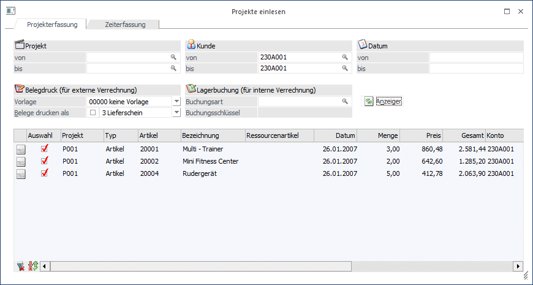

Über den Menüpunkt…
1 Erfassen
1 Projektverwaltung
1 Projekte einlesen
… können die erfassten Istwerte eines Projekts in einen Beleg übergeben bzw. die Artikel vom Lager abgebucht werden.

Selektion nach Projekt, Kunde oder Datum (bzw. im Filter nach allen Feldern des Projektstammes und des Kontenstamms). Nach Drücken des Anzeigen-Buttons werden alle erfassten Istwerte lt. Einschränkung angezeigt. Folgende Spalten können überarbeitet werden:
Ø Auswahl
Auswahl der Zeilen die in einen Beleg übernommen werden sollen bzw. für die eine Lagerbuchung erfolgen soll.
Ø Ressourcenartikel
Bei Ressourcen kann hier ein Artikel eingetragen werden, mit dem die Verrechnung der Ressource am Beleg bzw. die Lagerabbuchung erfolgt. Dieser Artikel kann bereits im Ressourcenstamm in der Produktion im Feld Artikel hinterlegt werden und wird dann hier automatisch vorgeschlagen. Wenn nur eine Lagerabbuchung erfolgt, kann mit Hilfe des Lagerstands des Artikels z.B. jederzeit überprüft werden, wie viele Stunden Wartung erfolgt sind. Wird die Ressource in den Beleg übernommen, dann werden die Ressourcenkosten mit diesem Artikel verrechnet.
Ø Konto
Falls beim Projekt kein Kunde hinterlegt wurde, kann dieser hier nachgetragen werden.
Ø Flag für Fakturierung
Das Flag für die Fakturierung kann hier noch editiert werden.
Beim Drücken des OK-Buttons werden alle ausgewählten Zeilen mit dem Flag "0 wird extern verrechnet" oder "1 wird intern verrechnet" in einen neuen Beleg übernommen. Dies ist ein nicht gerechnet nicht gedruckter Beleg der z.B. im Belegmanagement aufgerufen und weiterbearbeitet werden kann. Für alle ausgewählten Zeilen mit dem Flag " 2 wird intern verrechnet - kalkulierter Aufwand" oder "3 wird intern verrechnet - außerordentlicher Aufwand" wird eine Lagerbuchung erzeugt.
Für die Erstellung des Beleges bzw. der Lagerbuchungszeilen können folgende Einstellungen vorgenommen werden.
Ø Belegdruck
Auswahl einer Vorlage für die Erzeugung des Belegs. Dies sind die Vorlagen die auch beim Ex- bzw. Import von Belegen verwendet werden. Angelegt werden diese im WinLine Start unter Vorlagen / Vorlagen Anlage. Damit können Felder wie z.B. der Druckstatus oder auch die Belegart vorbelegt werden. Durch Aktivierung der Checkbox "Belege drucken als" können Sie den erstellten Beleg gleich rechnen und drucken lassen.
Hinweis
Damit der Beleg wirklich in der ausgewählten Belegstufe gedruckt werden kann, muss der Druckstatus über die Vorlage (bzw. die Belegart) dementsprechend gesetzt werden.
Beim Fakturendruck muss der Beleg ein "N für nicht bearbeiten" in der Stufe Lieferschein und ein "A für automatischen Belegdruck" in der Stufe Faktura haben.
Ø Lagerabbuchung
Hier wird die Lagerbuchungsart für die internen Istwerte eingegeben. Es sind nur Buchungsarten mit den Buchungsschlüsseln Verkauf oder Produktion erlaubt. Wird keine Lagerbuchungsart eingegeben, werden die Zeilen zwar übernommen aber nicht vom Lager abgebucht.